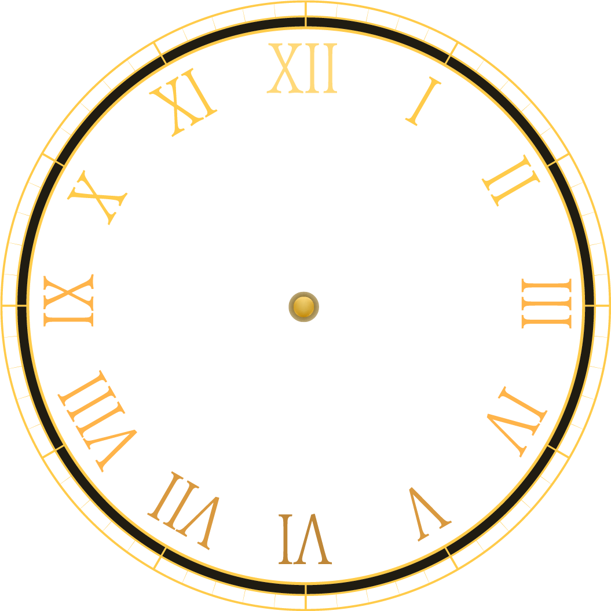
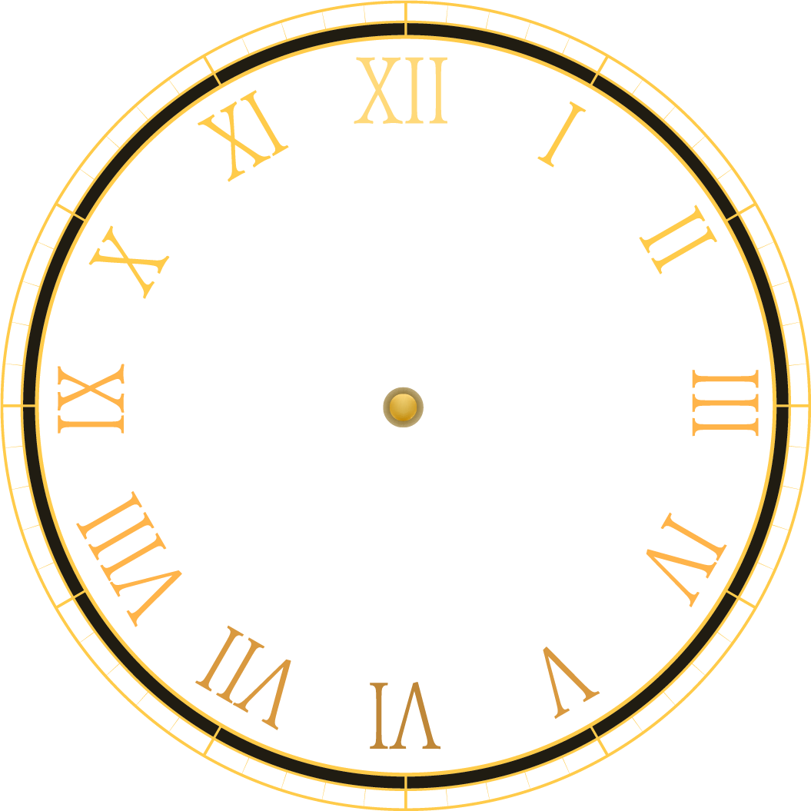

New York City was once on local time—until the railroads changed everything!
Before time zones were established, every city kept its own local solar time, meaning noon was when the sun was directly overhead. That made scheduling trains a nightmare. So in 1883, U.S. and Canadian railroads adopted standardized time zones, and NYC officially switched from "New York Local Time" to Eastern Standard Time. The city's clocks were reset by about 3 minutes and 58 seconds!